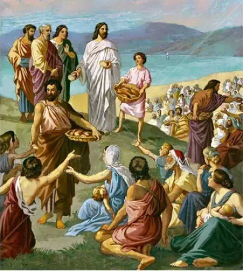
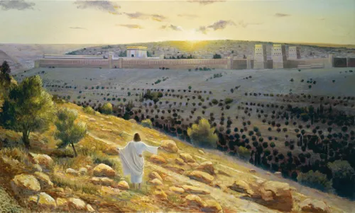
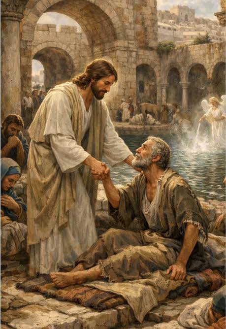
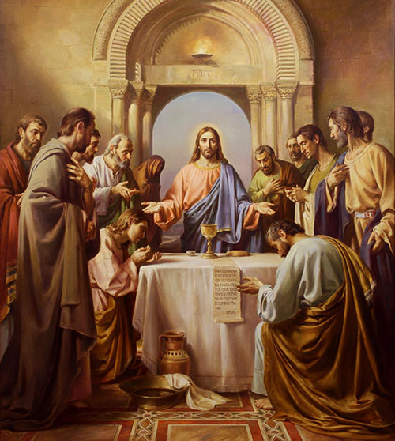

Rändake aega, mil Jeesus elas ja õpetas inimesi, iidsed linnad olid täis elu ning olulised piiblisündmused leidsid aset Pühal Maal.
Kujutage ette, kuidas päike tõuseb üle Jeruusalemma iidsete müüride, kitsastel tänavatel liiguvad kaupmehed ja palverändurid ning Galilea järve kaldal seilavad kalurite paadid. Ümbritsege end maailmaga, mida tunneme Piiblist ja ajaloolistest lugudest.
Aga miks lugeda piiblisündmustest ainult raamatutest, kui saate rännata ajas tagasi ja avastada nende toimumispaiku?
Meie ajarännaku teenusega saate külastada ajaloolist Jeruusalemma, avastada Petlemma, jalutada Galilea järve ääres ja tutvuda tolleaegse eluolu, traditsioonide ning kultuuriga.
Saate näha paiku, mis on seotud Jeesuse elu ja õpetustega, ning kogeda iidse Püha Maa erilist atmosfääri.




Avastage iidse Jeruusalemma tänavaid, turge ja ajaloolisi paiku. Tutvuge linna elu ja traditsioonidega.
Külastage linna, mida tuntakse Jeesuse sünnikohana. Avastage selle ajaloolist ja kultuurilist tähendust.
Nautige kauneid järvevaateid ja tutvuge kalurite igapäevaeluga. Piirkond on seotud paljude Jeesuse lugudega.
Avastage iidset Naatsareti linna ja tutvuge tolleaegsete majade, tänavate ning kohaliku eluga.
Tutvuge muistsete käsitööde, turgude, rõivaste, toidu ja traditsioonidega. Avastage, milline oli elu peaaegu 2000 aastat tagasi.